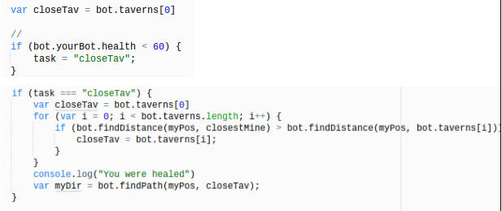

☰ Menu
Taverns (Deciding What)
 This part of my code figures out the health of my bot, and identifies if it actually needs to be healed. The code alerts the bot, that if it’s health gets below 60, it needs to be healed. Also the code tells the bot the location of all the taverns, and tells it to go to a tavern if it’s live is low. It finds that closest taverns, and goes to it for healing. The code tells the bot what to do by creating a variable called closeTav, which stands for the closest tavern. An array is created to store the data, and location of the every tavern in the game. Var closeTav = both.taverns[0], so that the bot knows where every taverns is, so it can be healed when the time comes. An if statement is created to check if my bot loses health. If the function for the bots health (bot.yourBot.health) is below 60, the bot will be alerted, and it will make the task of the bot equal to the closeTav variable. This tells the bot that if the health is lower than 60 it will make it the bots main priority to find a tavern, and get itself healed quickly. Furthermore the bot determines which tavern is the closest to the bot, by the use of a loop, to determine the length of the array of all the taverns. If any of the lengths of the taverns is the shortest, the the bot will only go to that taverns. Only if the health drops below 60 the bot will go to a tavern, otherwise the bot will focus on other priorities. I decided to write this code in this fashion because first of all I knew that if I created a variable for the closest tavern, and set it equal to the array of the all the taverns I could tell the bot what to do. I chose to write the array, because I could easily locate all taverns in the game, and give the information to my bot. I Determined that at 60 health the bot should heal itself, because in the game each bot has 100 health. And so I wanted to play it safe and keep my bot healthy most of the game.
Deciding How
I made the following code by creating simple variables, for example like the variable closeTav. I knew that I needed my bot to be able to find the taverns when it needed to. I made it possible for my bot to locate the closest taverns by creating code that could identify where the taverns were located. For the bot to heal itself it’s needs the health to be less than 100 health. This lets me know that the task should be equal to the location of the each tavern, which is basically how I allowed the bot to find the taverns in the first place. I identified that if I wanted my bot to locate the taverns nearby, the task would need to be equal to the task of the closest tavern. Moreover I created a loop to check if the length of the array of taverns was closest to my bot. I produced a statement that found the distance of the closest tavern, and told the bot to go to that tavern.